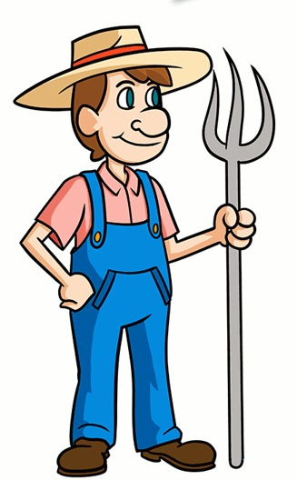

Fermierul și vulpea
\Un fermier are o vulpe, un pui și un sac de cereale. El trebuie să treacă un râu, dar barca lui îl poate transporta doar pe el și un alt obiect odată. Dacă o lasă pe vulpe singură cu puiul, vulpea va mânca puiul. Dacă lasă puiul singur cu boabele, puiul va mânca boabele. Cum poate fermierul să transporte toate cele trei articole peste râu în siguranță?
